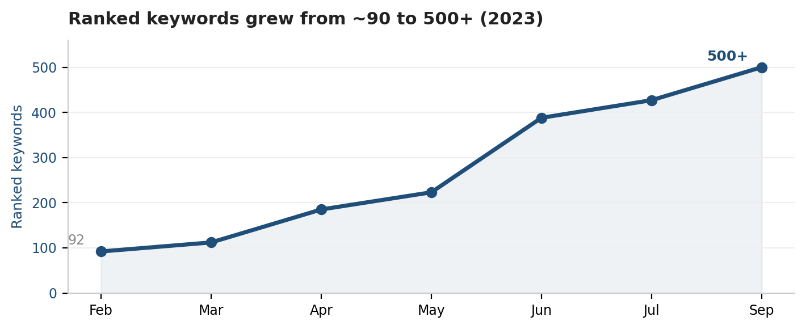

Sales-recruiting & training company · US
Taking high-intent keywords to #1
A multi-year SEO program built on content and backlinks.
Role: SEO program lead
Multi-year engagement
Content & backlinks
90 → 500+
ranked keywords
#1
flagship terms
Pos. 0
featured snippets
Multi-yr
SEO program
Problem & context
A sales-recruiting company with little organic visibility for its highest-intent search terms.
My role
SEO program lead across content and backlinks (multi-year engagement).
Process & approach
- Built a middle-of-funnel blog library targeting the terms buyers search before they convert.
- Optimized existing content and internal linking to consolidate authority.
- Ran targeted backlink rounds against flagship keywords to push them into top positions.

Outcome & results
- Grew ranked keywords from ~90 to 500+ in under a year, with hundreds improving each month.
- Took flagship terms to #1 — 'high ticket sales closer' from #3 to #1, and 'hire commission only sales reps' to #1.
- Won featured snippets for high-intent queries, capturing position-zero traffic.
Ranking for a thousand soft keywords is easy; taking the handful of terms your buyers actually search to #1 is what moves pipeline. This program went after the latter.